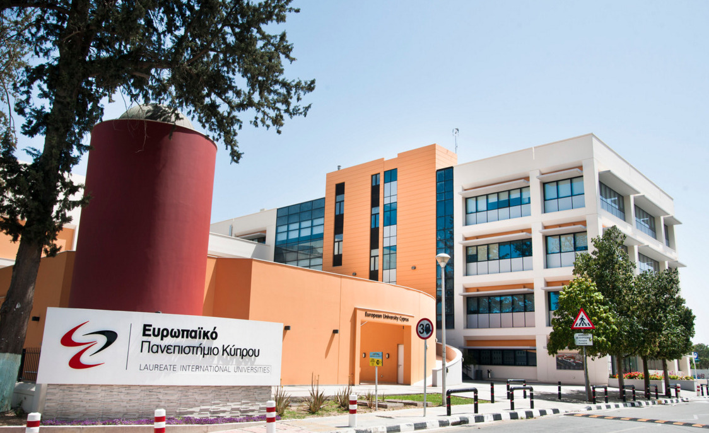

Making the Most of Your University Experience at EUC: A Student’s Perspective
Undergrad student life guide through my experience studying in European University Cyprus

European University Cyprus, mainly has a Cypriot community where students come with their established friend groups from school, so you need to put more effort in socializing. For example, if you are coming from abroad you need to establish some common ground and try to do some activities with your colleagues. Moreover, the class atmosphere as well as in the cafeteria helps the newcomers to adjust socially to life at university. Even if you do something apart from university in the city (e.g. join a gym, attend a student event) there is a high possibility of bumping into people that study at the same university. Therefore, I would say that it is not difficult to cover your social needs in that sense and overcome the social barriers during the first months — just get involved!
ACADEMICS
The academic adjustment was more demanding in comparison with the social one. While I began university after a year and a half gap and I was not confident with my academic abilities, I did very well at school. As long as you are organized and focused and you prioritize, you will set yourself up for good grades and success. One strategy that helped me is that I kept track of the material for each course by filing it all separately. This eliminated unnecessary stress. This method, in conjunction with a systematic study approach by studying each week right after each lecture, allowed me to absorb the learning material in a very effective way. In addition, I was doing a 3 hour focused study sessions without distractions (i.e. phone away, water/drinks next to me, and using the bathroom before so I don’t have excuse to stop). At the university, you will also have your personal advisor who, in coordination with your department, will support you academically. This is the person whom you will be addressing all the concerns you have regarding the courses. Having a personal advisor helps you to adjust at first. Having him/her throughout your studies gives you guidance on what classess to choose based on your goals, which is also important.
SET-UP YOUR CAREER
For job opportunities and internships, the EUC Career Center has a lot of great resources. One of these is their own employment platform — “CSM Simplicity” — for our students. It is a great tool whether you are looking for a part-time job or to really launch your career after you’ve finished your degree. Their Career Center’s priority is to help EUC students to achieve their career goals. They organize career workshops and share many opportunities with the students. They also offer personal consultation to students for writing a CV or acing an interview. Moreover, if you make clear that you are interested, they send you personally current job and internship offers tailored to your interests and study field.
CONNECT WITH FACULTY
In my school journey, I have also had the support of the faculty. The professors are friendly and approachable. They have office hours and during that time they are open to discussing anything with the students. Discussions with my professors also gave me insights which then helped me to formulate tailored study methodology in each course. Another positive element that comes along with the interaction with professors is that you get to know about new program opportunities that under normal circumstances you wouldn’t know about. Something that for me created a snowball effect as it evolved to be something larger. For example, the interaction I have had with one of my professors, led me to get exposure to different programs outside school such as the Study of the US Institutes for Student Leaders; a fully funded program in the US for 6 weeks. I found out about this program as I was participating in a workshop outside of the university in which he organized and invited our class.

PURSUE OPPORTUNITIES ABROAD
This brings us to the travelling opportunities that students have to explore the world. Another part of the university that I would like to talk about is the Erasmus exchange opportunity that offers. It gives you the ability to do an internship or to study in another EU country, which is the most popular option. Since I entered university, I have tried to get involved with the Erasmus program to experience what I had been hearing about that is so amazing. So, I spent my third semester in Denmark living as an exchange student. This was really a worthwhile experience. First, I made new friends and during that time frame, I had the chance to travel a lot. But even more significant was the effect upon my arrival back home. I came back with more confidence; higher ambitions and I was able to see more clearly what is happening in the international arena. Then I joined the Erasmus Student Network organization in Cyprus which deals with incoming exchange students. So I extended my Erasmus experience as I expanded it locally with all its benefits that come along. This experience also had a snowball effect. That is because then I have had many opportunities to participate in other short-term funded Erasmus exchange programs in Europe. Furthermore, through being a part of active youth in Cyprus I have also found out about, applied to, and been selected to be a part of the Cypriot delegation at Model United Nations at Harvard University in Boston. Something that opened the doors for me for being a part of even more activities beyond Europe.
Regarding the Erasmus experience that EUC offers, there are many countries that the university has an agreement with, and YOU as a student have the chance to attend. On the university’s website, you can find the Erasmus agreements that EUC has and choose according to your field of study and personal preferences.
In conclusion, there is a lot that you can gain from European University as long as you take initiative. It is up to YOU to chase those opportunities that are aligned with your interests, and you believe that have the highest potential. Show interest in the classes, invest in relationships with students and professors and stay up to date with the Erasmus office and the career center for opportunities at home and abroad. My biggest tips? Get involved, stay organized and never be afraid to really go for it! I had such great experiences at EUC by living by these words.
Loizos Konstantinou, 2021’
Business Economics Undergrad